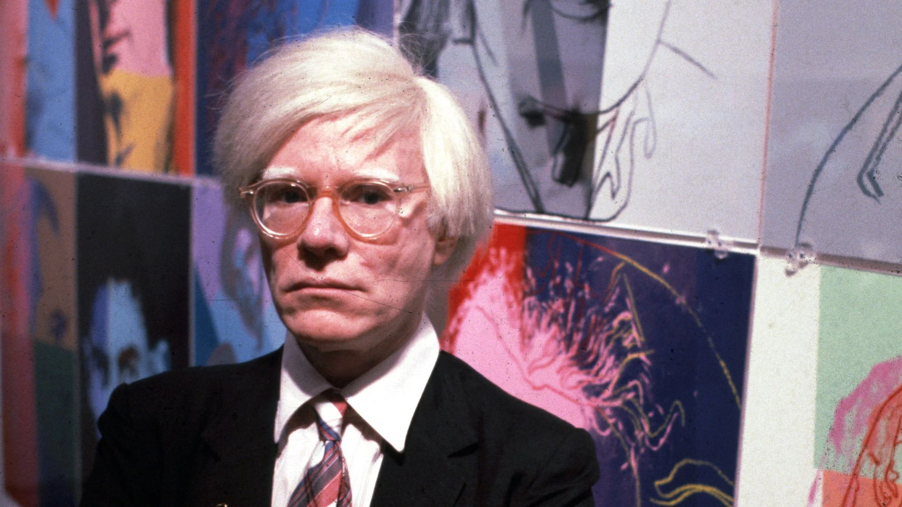
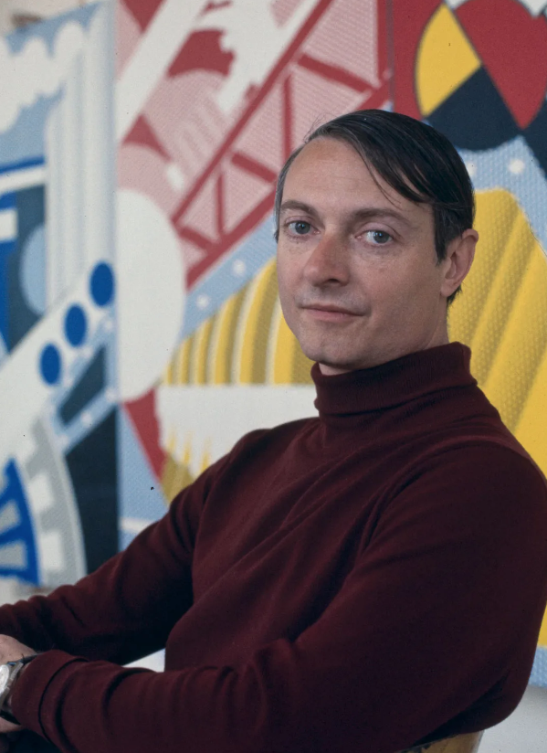

01ANDY WARHOL
1928 — 1987 | Estados UnidosAndy Warhol fue una de las figuras más reconocidas del Pop Art estadounidense. Antes de dedicarse plenamente al arte, trabajó como ilustrador comercial, una experiencia que influyó profundamente en su producción artística.
Sus obras utilizaron imágenes provenientes de la publicidad, productos de consumo y figuras famosas. Warhol recurrió a la repetición y a técnicas como la serigrafía.

02ROY LICHTENSTEIN
1923 — 1997 | Estados UnidosRoy Lichtenstein desarrolló un lenguaje visual inspirado especialmente en las historietas y en las técnicas de impresión utilizadas por los medios gráficos.
Sus pinturas se caracterizan por los contornos negros, los colores intensos y los puntos Benday, que imitaban los sistemas de impresión comercial.
 03
03
CLAES OLDENBURG
1929 — 2022 | Suecia / Estados UnidosClaes Oldenburg llevó el interés del Pop Art por los objetos cotidianos al campo de la escultura. Se hizo conocido por representar alimentos y objetos comunes modificando radicalmente su tamaño, material y contexto.
Muchas de sus esculturas convierten elementos aparentemente insignificantes en piezas monumentales.